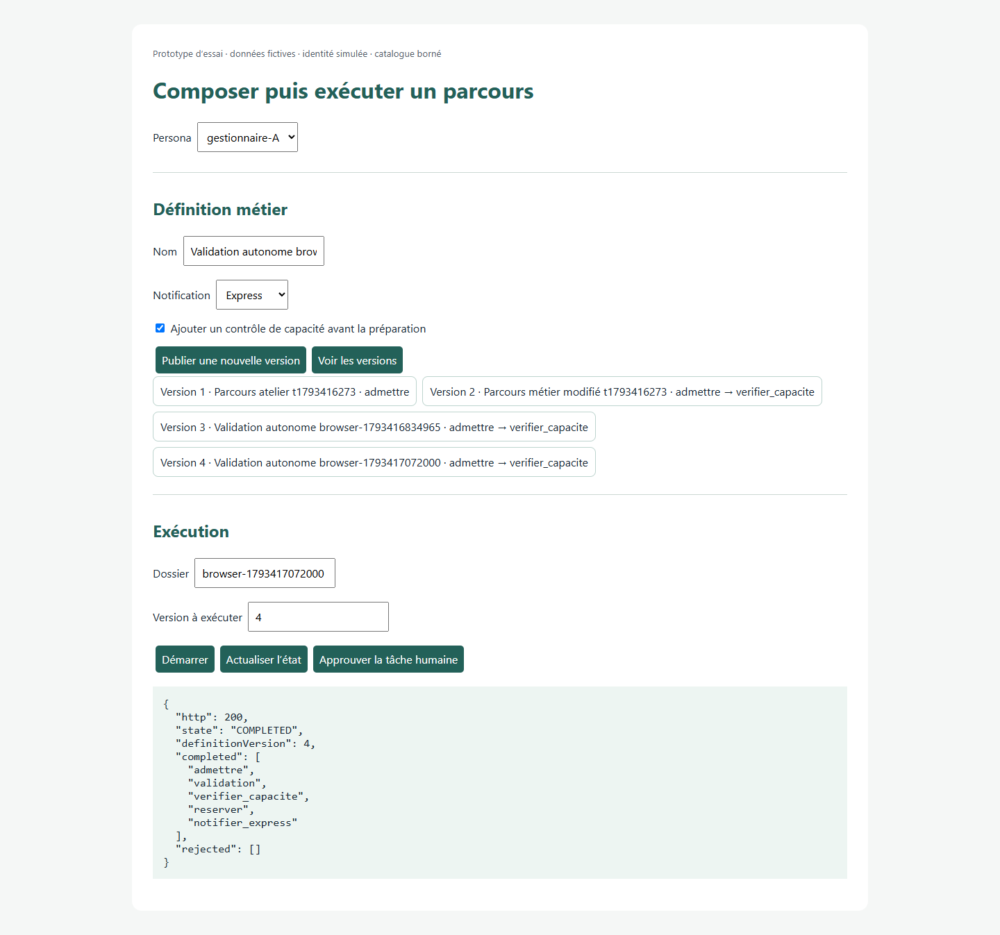
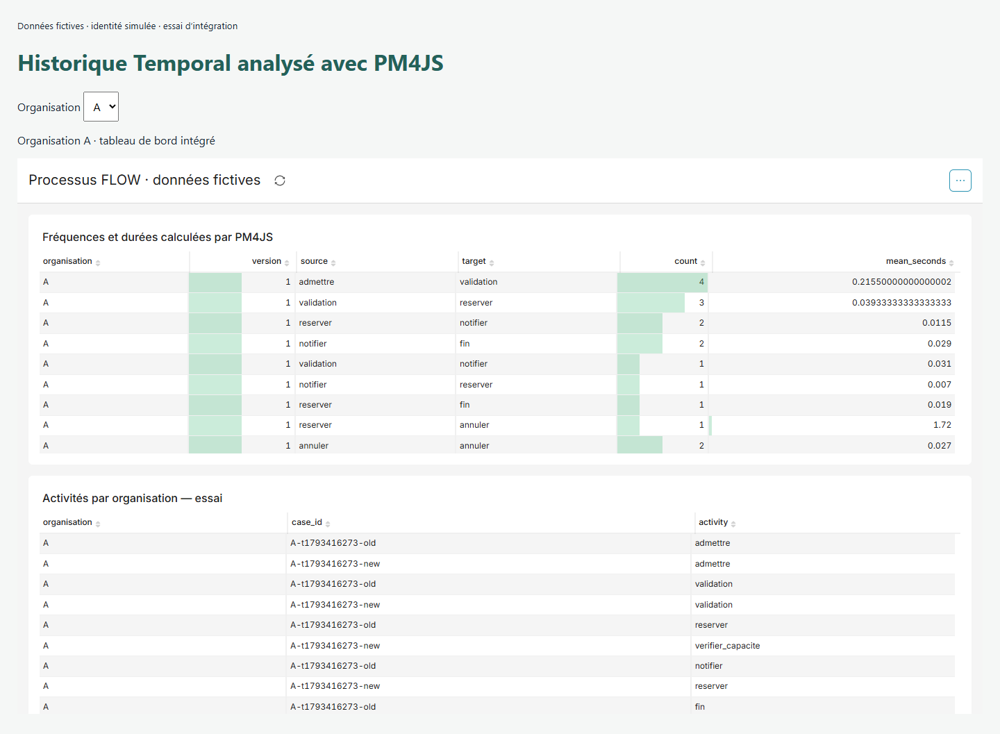

Étude économique FLOW · 31 octobre 2026 · proposition distincte des décisions adoptées
Temporal, Process Mining et tableaux de bord
6 660 JH proposés, conservés après les essais.
Les choix techniques sont mieux étayés sur un catalogue borné. Le chiffrage reste une estimation d’opportunité par analogie. Ces essais ne le calibrent pas en charge réelle.
| Lecture | JH |
|---|
| Décisions déjà adoptées, conservées | 4 160 |
| Autres familles adoptées, hors ancien Process Management | 3 820 |
| Process Management avec studios, portail, formulaires et pilotage, en remplacement des anciens 340 JH | 2 010 |
| Ateliers de planification et décision | 160 |
| Fonctions IT complémentaires nouvelles | 670 |
| Total proposé | 6 660 |
|---|
Finalités : 5 886 JH de runtime et outils métier ; 774 JH de fonctions IT, dont les 104 JH déjà attribués dans Master Data. Le coût proposé, aux tarifs du modèle, reste 4 198 680 € HT.
Ce qui a été éprouvé
78 exécutions de contrôles réussies. Ce nombre inclut des répétitions avec cache ; ce n’est ni un nombre d’exigences couvertes ni un indicateur de confiance.
| Ensemble | Contrôles |
|---|
| temporal-unit | 11 |
| temporal-live-phase1 | 26 |
| temporal-durable-restart | 2 |
| mining | 17 |
| superset | 13 |
| browser | 9 |
Exécution et versions des processus
Publication depuis un écran, ajout d’un contrôle sans redéploiement du worker, maintien de l’ancienne définition pour les dossiers ouverts, validation humaine, refus, temporisation, retry et compensation. La reprise après arrêt brutal du serveur et du worker conserve l’historique sur SQLite.
Historique, corrections et conformité
Projection d’historiques Temporal réels de l’essai, dédoublonnage, corrections tardives et lecture à une date connue. PM4JS calcule fréquences, durées et conformité. Un graphe des successions ne suffit pas aux tâches parallèles : un modèle de processus versionné est nécessaire.
Tableaux de bord intégrés
Les mesures PM4JS sont restituées dans Superset. Le SDK officiel renouvelle le jeton. Les essais entre deux organisations séparent les données, y compris avec le cache, lorsque le serveur impose les filtres d’accès aux lignes.
Responsabilités Flow confirmées
Temporal ne rend pas seul les effets externes uniques : les adaptateurs doivent traiter les doublons. Superset exige des jetons limités à l’organisation et des jeux de données dont toutes les colonnes sont autorisées. Les contrôles de version, projections et autorisations restent du travail Flow.
Les mesures de mining portent sur 8 historiques de l’essai, 42 événements métier et 21 lignes de mesures par organisation et version. Aucun objectif de performance en production n’en est déduit.
Quatre itérations guidées par les résultats
1. Catalogue et exécution Temporal
Validation humaine, refus, minuterie virtuelle, retry, effets externes dédoublonnés, compensation, versions figées et rejeu vérifiés.
Analyse : Un adaptateur externe sans traitement des doublons produit deux effets lors d’une réponse perdue. Le test de remplacement du worker en mémoire n’a pas repris la tâche.
Suite : Passer au serveur Temporal officiel avec stockage persistant et tuer les vrais processus.
Cumul proposé : 6 660 JH · adopté : 4 160 JH · effet de l’itération : 0 JH.
2. Reprise persistante et autonomie métier bornée
Remplacement du worker puis arrêt brutal du serveur et du worker : le dossier reprend. Les 11 premiers événements de son historique restent identiques. L’écran publie une nouvelle version, ajoute un contrôle et exécute cette version sans redéploiement.
Analyse : La reprise et le maintien de l’ancienne définition sont établis dans ce témoin. Le studio complet et la migration arbitraire d’instances ne sont pas démontrés.
Suite : Exploiter les historiques réellement produits pour contrôler découverte, durées et conformité.
Cumul proposé : 6 660 JH · adopté : 4 160 JH · effet de l’itération : 0 JH.
3. PM4JS : projection, corrections et tâches parallèles
Les algorithmes PM4JS opèrent sur les historiques. Le dédoublonnage, les corrections tardives et la lecture de l’état connu à une date sont contrôlés. Deux contre-exemples montrent les limites du graphe de successions ; le réseau de Petri versionné reconnaît les bons ordres et les écarts.
Analyse : La bibliothèque fournit les algorithmes. La projection et le choix du modèle restent à Flow. La mesure de vitesse sur données fictives ne constitue pas un engagement de volume.
Suite : Brancher les mesures calculées sur les vraies API et l’iframe Superset ; contrôler les organisations et le cache.
Cumul proposé : 6 660 JH · adopté : 4 160 JH · effet de l’itération : 0 JH.
4. Superset : mesures, accès et navigateur
Les fréquences et durées calculées sont restituées exactement pour A et B. Le SDK officiel affiche le tableau, renouvelle le jeton et préserve la séparation des organisations avec le cache.
Analyse : Un jeton sans filtre donne accès aux deux organisations. Le jeu de données doit ne contenir que des colonnes autorisées. Les filtres, adaptateurs et identités restent financés dans les lots Flow existants.
Suite : Arrêter cette série : les mêmes essais ne calibreraient ni les tailles équivalentes ni les JH. La prochaine preuve utile dépend d’un catalogue ou de volumes plus précis.
Cumul proposé : 6 660 JH · adopté : 4 160 JH · effet de l’itération : 0 JH.
Le premier test de remplacement du worker dans le service en mémoire a échoué par attente dépassée. Son résultat est conservé. La reprise a ensuite été éprouvée avec succès sur le serveur officiel persistant, puis après l’arrêt brutal des deux processus. Ce succès ne démontre pas une reprise de cluster.
Ce qui reste incertain pour le chiffrage
- Étendue et ergonomie des studios, catalogue des actions et formulaires : le témoin est volontairement borné, sans validation d’usage par le métier.
- Migration des dossiers déjà ouverts : le maintien de leur ancienne version est éprouvé ; une migration arbitraire entre versions ne l’est pas.
- Volumétrie, haute disponibilité, reprise d’un cluster, authentification réelle et intégration Beaumanoir : ces essais locaux ne les démontrent pas.
- Le comptage COSMIC prévisionnel et la référence ISBSG restent inchangés. Le désaccord avec COCOMO ne diminue pas avec ces essais techniques.
- Les fractions de composants restent des hypothèses par analogie, sans bilan de projet pour les calibrer. Aucune précision statistique n’est déduite des contrôles réussis.
Process Management : COCOMO arrondi à 2 010 JH ; COSMIC × ISBSG à 617,1 JH pour 216 CFP. COSMIC reste 69,3 % plus bas que la référence COCOMO avant arrondi. Les essais techniques ne rapprochent pas ces calculs.
Le regroupement en un seul projet COCOMO reste une sensibilité de méthode : environ 8 066 JH contre la somme de 6 660 JH. Ce n’est pas une charge nouvelle démontrée à ajouter. Les fractions de composants et le mode de regroupement demeurent des hypothèses déterminantes.
Financement sans doublon
- Interprétation du catalogue, publication, versions et reprise · process-studio. L’adaptateur Temporal, la validation et la publication appartiennent déjà à ce lot. L’essai ne remplace pas le studio complet.
- Validation humaine et rendu des formulaires · human-forms. Le contrat de tâche est consommé par le portail. Le prototype ne démontre pas un générateur complet de formulaires.
- Projection, corrections, conformité et tableaux de bord · analytics-mining. PM4JS et Superset fournissent les noyaux. Le modèle de traces, les adaptateurs et le contrôle des tâches parallèles sont dans la couche Flow déjà proposée.
- Identités, filtres de données et effets externes sans doublon · admin-security, operations-lifecycle. Consommer les mécanismes Master Data déjà financés ; financer une seule fois l’intégration produit des habilitations et de la reprise. Les identités de l’essai sont simulées.
Avancement et décision d’arrêt
Le périmètre déclaré reste à 88 capacités sur 88 étudiées et adoptées. Les 20 familles professionnelles inventoriées sont rattachées aux lots proposés. Les essais ciblés portent sur Temporal, PM4JS et Superset : ils ne démontrent pas toutes les garanties de ces 20 familles.
Arrêt de cette série d’essais : répéter les mêmes cas n’améliorerait plus le chiffrage. Une nouvelle itération devient utile si le catalogue, les règles de migration des dossiers ouverts ou les volumes attendus changent.
Témoins dans le navigateur


Versions et preuves
- Temporal CLI 1.9.1, SDK Java 1.36.0, serveur de développement SQLite
- Java 21, Spring 6.2.12 avec BOM Spring Boot 3.5.7
- PM4JS, commit 3eb7378dd5db8db72d7474454d69a455855b9e25
- Apache Superset 6.1.0 avec contraintes officielles de dépendances, SDK embarqué 0.4.0
Les dépendances officielles de Superset ont été utilisées après un échec avec des versions récentes non contraintes. Le choix des versions de production reste à qualifier.
Preuve autonome avec programmes, contrôles et historiques · Journal des itérations · Reproduction et limites
Le métamodèle, l’application et le téléchargement unique référencent la même preuve. Les simulations restent fondées sur les décisions adoptées.
Vérification de l’application
306 tests Python, contrôles frontend, TypeScript, textes et compilation réussis. Les six scénarios et deux cas limites dans le navigateur statique reproduisent Python ; les sauvegardes sont conservées. Le téléchargement autonome recalcule les JH sans lecture du dépôt.
Serveur local actualisé sur 8766 : proposition 6660 JH, référence adoptée 4160 JH, 78 contrôles d’essai. Téléchargement compressé actif. Les cinq options et quatre horizons conservent leurs valeurs financières.
Validation complète et comparaison financière · Vérification du navigateur · Recalcul autonome du téléchargement